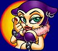

● ● ●
| ------------------------------------------------------------------------- |
| −−北村さんはアートディレクターですよね。曲がキャラクターのイメージにあわない場合は、ダメ出しもするんですか。 |
| 北村 そうですね。抽象的なんですけど、「もっとハードに」とか、「もっとダークに」とか。 中塚 でも、ほかのゲームソフトに比べるとダメだしは少なかったですね。 |
| −−北村さんは曲を一度聞いてから、絵を考えていったんですか。 |
| 北村 いえ、ほとんど並行してお互い別々に作っていました。音と絵をあわせたときのギャップはあまりなかったです。私にあわせてもらったというか（笑）。けっこう周囲があわせてくれた感じがあるんで、私はわりと好きにやらせていただきました。 |
| −−ハードロックになったのは？ |
| 北村 個人的に特にこだわりはなかったんですけど、絵のイメージですね。 谷口 最初にプロジェクトが立ちあがったときに、キャラクターのイメージが、いままでの任天堂にないものだった。それで、これまでとはユーザー対象も違うだろうけれど、それでも構わないと。 北村 いままでの任天堂のほのぼのしたキャラクターと全然違うものだったんです。主役のバーバラは最初は悪役のつもりで作ったキャラクターだったので、どうしてもハードロックなイメージになってしまったんですね。もっとほのぼのとした主人公もいたんですけど、悪者のほうが気に入ってしまって、そちらが生き残ったという。 |
| −−キャラクターを書くときに参考にしたものはあるんですか。 |
| 北村 キャラクターというのではないのですが、プロジェクト立ち上げのときに、世界観の参考にと、みんなでライブハウスを見に行きました。 中塚 とりあえず楽しんだだけです（笑）。 谷口 僕が引率して行きました。京都のライブハウスにみんなでゾロゾロと出かけて行ったんですよ。 |
| −−みんなでアドバンスを持ち寄ってバンドみたいにできるというアイデアは、最初からあったんですか。 |
| 中塚 そうですね。セッションをしようというアイデアは最初にありました。 |
| −−スピーカーもセット販売ですか？ |
| 中塚 ええ。内蔵のスピーカーでもいいんですが、セッションをしようとすると、どうしても音が小さいので。 |
| −−セッションをするときは通信で同期をとれたりするんですか。 |
| 中塚 それはいま、検討中ですね。 |
| −−ギターの音がとてもカッコよかったんですけど、どれくらいの種類の音が出せるんですか。 |
| 中塚 楽器音は50種類以上用意しています。エレキギター、アコースティックギター、チョッパーベース、オルガンとか、あとは、管楽器系、ドラム系、パーカッション系などです。そのほかにも犬や猫の鳴き声があります。 |
| −−楽器ができない人も、簡単にプレイできますか。 |
| 中塚 ええ。楽譜が読めなくても簡単にプレイできるソフトです。音楽的なセンスというよりは、ボタンの操作に慣れるセンスがあればいいんです。少し時間をかけて慣れれば、だれでもプレイできますし、初心者のかたにもきっと楽しんでもらえると思いますよ。 それから「楽器演奏モード」では洋楽中心にプリセットで何曲か入れる予定です。 |
| −−今後、スピーカーのようなアクセサリーは発売されるんでしょうか。 |
| 中塚 そうですね。いろいろな曲の楽譜集を出したりしたいですね。将来、アドバンスだけで演奏するバンドが出て来てくれるとうれしいですね。ギターもベースもドラムも、全部アドバンスで演奏しているというバンド。そんなバンドが登場することが夢なんです。 |